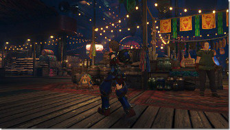
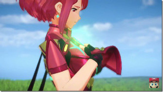
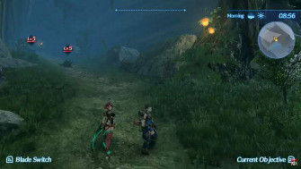
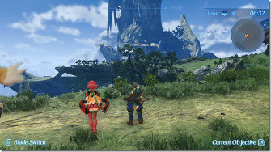
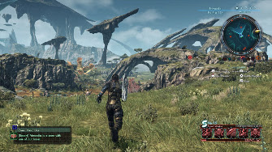

Xenoblade Chronicles 2 is one of a handful of major Switch games coming out later this year, and at E3 last week, we finally got a closer look at the new story and reconfigured battle system. While there's been a major shift in the style of art used in the game (compared to Xenoblade Chronicles and Xenoblade Chronicles X), in many ways, Xenoblade Chronicles 2 looks like the logical next step in the evolution of Monolith Soft's Xenoblade series...
Microsoft's Hololens augmented reality headset may not have had a widespread consumer release yet--and it may never have one. But that didn't stop someone from getting one and taking advantage of its hardware to recreate Super Mario Bros. in it...
Double Fine's adventure game, Broken Age, has had a long and interesting development history. The developer ran a wildly successful Kickstarter campaign way back in February 2012. In 2014, it launched the first half of the game on PC, and in 2015, the entire game was released on PS4, Vita, PC, iOS, Android, and even Ouya. Now, five years after its crowdfunding campaign, Broken Age is finally available on Xbox One...
A Peek Inside The Mind Of Xenoblade Dev's Legendary Leader
Speaking to the president and co-founder of the studio, we learned that this is all part of Tetsuya Takahashi's methodology. He is a game developer with an incredible track record, having played a major role in the development of games like Final Fantasy VI, Secret of Mana, Chrono Trigger, and most importantly, Xenogears. Xenogears was Takahashi's first time sitting in the director's chair, and thus began the cycle of Xeno-games. From Xenogears to Xenosaga to Xenoblade, Takahashi told us that he's been iterating on game concepts and stories on a constant basis, from one game to the next.
Our interview below touches on Takahashi's approach to game development, but also his fondness for VR and Battlefield 1, and why he can't stand playing RPGs in his spare time. Editor's note: This interview was conducted with the assistance of an interpreter from Nintendo. During the Nintendo Treehouse presentation at E3, you mentioned the idea of the drama that exists in real life between people, and how that's the key focus for what you want to deliver in Chronicles 2. I'm curious if you could speak to that a little bit more. In terms of the drama between humans and previous games, this game has the name "Xeno." Like I mentioned, it's about differences or something out of the ordinary. Just take for example all of us in this room, we're all from different places, and we are different personalities, and the way we think is different. To gather all of those people into one place, I think there is both positive and negative that can come out of that...Looking at a bigger scale, it can be survival of the fittest or things on a country-based scale, like invasion, something like that.
In this game world that we're trying to create, there are these enormous beings called Titans that people live on and, that's their land. But their land, the Titans, are dying. Once they die, they sink into the cloud sea, so all these people are going to lose their land. They're not going to be able to survive, and I think when you look at it in the real world, I think something like that, something similar happens where there is a lot of competition for resources in the world we live in right now. Relatively speaking, the United States or Japan are wealthy countries where people live comfortably, but on the other side there are countries that are very poor where people are struggling and suffering. Trying to think about what can we do for all of us to live together well and how can we do that is something that I think about when I'm trying to create games like this. Then in terms of touching on the idea of religion a little bit, I think for us as Japanese people, we have a little bit of contradiction in terms of religion in that, in Japan, we celebrate Christmas, and then a few days later we go to the shrines to do New Year's Prayer, which is based on Shintoism. When someone passes away, we ask Buddha's monks to say our prayers. It's kind of all over the place, but at the same time there is this idea of having tolerance for all those religions. That is something that I kind of wanted to put into my game, so that the idea of tolerance is something that can be had between people as well. And when we're creating this world within the game, I kind of wanted to put that idea into the relationships that the characters have with each other and the relationship that the character has with his or her blade as well. Editor's note: A "blade" in Xenoblade Chronicles 2 is a type of sidekick character.
That's a very thoughtful approach to designing a story. How do you use interactivity to support the feelings and ideas that you have? The medium of film, for example, is a bit of a passive one in that you're just accepting information and thoughts, and then you react or have an emotional reaction to that. Whereas games, as you mentioned, are interactive. I do think that games, because they're interactive, it's a medium that requires the user to actively go into the world of the game and actually experience it for themselves. In that sense, I've always thought that compared to having a passive experience, actually having an active one where you go and experience things has more impact on your life. I think that a lot of the thoughts and concepts and ideas that I would like to portray in my games are easily conveyed in the way I want through an interactive medium like video games. You definitely have a very distinguished career and a history of making games that mean something to a lot of people. I'm curious if you can pick one--what is the game from your past that means the most to you? I think for me, all of them. The reason I say that is when I'm creating games, and once we complete a game, there's always this phase of post-mortem where I think to myself, "I could have done this better, or I could have changed that." It's not limited to just what I think of it. I also take in some of the players' feedback and other people's thoughts and think about, "Maybe if I do this next, people will enjoy it more. Maybe if I do that or change this, it would turn out better." It's the cycle I go through for every game that I am a part of. If we started with Xenogears, there is a post-mortem that happened there that I put to use in Xenosaga. Then we went into a different title and then to Xenoblade and to X. It's just a reiterative cycle. To me, every single game is an opportunity to learn, and it's also an opportunity to challenge myself. What step in the cycle does Xenoblade Chronicles 2 represent?
I think in terms of Xenoblade 2, there's always--like I mentioned--things that I wished I could have done or thought I should have done differently. I feel like Xenoblade 2 is my opportunity and my way to put all of that into reality. I say all of that, but I probably can't do everything in that title, and I'm sure that when this game is done, I'll have more post-mortem things to think about and more changes and different things that I'd like to do. That'll be carried out to the next title, whatever it is that I work on. It's this cycle that really keeps me going, but obviously if you're stuck on one point, you can't move forward, and the game will never be made, so there's certain times where you have to kind of draw the line and say, "This is how far I'm going to go this time. Whatever is left, I'll carry it on to the next game." That's kind of how I see it, but Xenoblade 2 is kind of like a culmination of all the things that I have done--and would like to have done--from my past. What about the rest of Monolith Soft? How do your team members help you identify and hone the message that you're trying to examine? In terms of this project, obviously I first and foremost conveyed the direction and the vision that we're trying to achieve with this title, but given my position, if I were to speak directly to all of the staff, it might seem like a commandment coming from the company. If I have feedback that I want to share, I go to someone like Koh Kojima, who is the director, or some of the leads that are on the teams, and then have them convey to the individual staff. Because if I were to really go and speak with someone directly who is actually doing all the work, they would probably drop everything and prioritize that, and that's something I don't want to do. That's why I try to take this kind of structure so that it doesn't impede on the work of all of the team members. Do you ever feel interested in working on a smaller project, one with a team that's very intimate that can work together and where you can have that sort of direct influence? If it was just a simple yes or no question, I would have to say yes, I would love to do something like that. But Monolith in and of itself has grown to be a big company, so we need big projects to sustain that company, for one. At the same time, if for example the next generation of developers and staff that could really handle a big game on their own [arrives]--if that comes up--then I'm kind of free to do whatever I want. When that time comes, I would love to work on maybe smaller projects. Do you only want to create RPGs? Are there any other genres that interest you or any other methods of play? Actually, my favorite type of games are first-person shooters. Obviously, I like action games and strategy games. I like RPGs as well, but what happens is when I get involved in creating a game, it makes it hard to enjoy that game. For example, right now it's very hard for me to enjoy RPGs because my perspective becomes that of a creator and not a user, in that I would always think, "Well, why is it this way? They could have done this, or this could have been done that way to improve." It's hard to get back into the user perspective. Although I'm interested in it, if I were to make different genres, then I wouldn't be able to enjoy those.
What games do you play in your spare time? Probably out of the games I'm playing right now, I think the most that I've sunk time into is Battlefield 1. How do you feel about the the fact that video games have become such a huge business? Is it good for you? Is it good for the games you have to make? Or does it present unique challenges that sometimes make you nostalgic for when times were simpler? I think the current status of the Japanese gaming industry is exactly that, where a lot of developers and publishers are kind of exhausted from creating major triple-A titles. There's a lot of companies that are creating smaller-scale games like on smart devices. I feel like these kinds of games are kind of reminiscent of older games that were a lot simpler. Although I don't think it's bad, I don't personally like it. I think a lot of publishers and developers have this kind of vision where--if you've seen the movie Brain Storm--you kind of put this equipment on, and you can actually go into the world itself. It's almost like Matrix basically where you can really immerse yourself in the world and live in that world. I feel like myself included, that might be kind of like the ultimate form of interactive entertainment. With that said, the industry is right now at a point where it's really not suitable to create big titles; however, I do have that vision that that's the ultimate place, and I want to keep going. That's why I create big games, and I would like to keep going until I can't anymore. Have you spent much time playing virtual reality games, and if so have any in particular stood out to you? Yes, I have spent a little bit of time playing VR. I guess the most impressive is maybe adult entertainment, but that's not video games. Going back to video games, I think one of the problematic issues with VR is that in moving your character, you yourself aren't moving, so it can cause a lot of motion sickness. I think that's one of the hurdles that virtual reality needs to overcome. In terms of an incredible or amazing title, I don't think it exists yet because a lot of the big companies haven't been able to make any seriously major investments into VR, so that kind of truly impressive content isn't out yet. In terms of what's available now, I had the opportunity to play...I was interested in Resident Evil 7, so I tried that out, and I found it to be extremely scary to the point where I couldn't move forward. I thought that was impressive, that it can create a reaction in a user that prevents them from moving forward because they're too scared. I thought that was impressive. Locomotion is obviously a big challenge in VR, but you mentioned adult entertainment--typically being present when something is happening around you. Would you ever be interested in making a passive VR experience as a mean to communicate your thoughts and ideas? If I were to make a virtual reality experience, I would definitely want to make it interactive.
Super Mario Bros. Adapted For Hololens, Then Played In Central Park
Microsoft's Hololens augmented reality headset may not have had a widespread consumer release yet--and it may never have one. But that didn't stop someone from getting one and taking advantage of its hardware to recreate Super Mario Bros. in it. Abhishek Singh built the iconic first level of Mario to work in augmented reality, giving himself a first-person, three-dimensional view of the game. Level 1-1 has likely been recreated more times and in more ways than any other level in video games, but Singh's version is definitely an awesome new look at it. Singh took his demo even further, however, by dressing up as Mario and proceeding to play through it on the sidewalks of Central Park in New York City. It's pretty hilarious to see a grown man wandering down the trail in a headset, punching blocks and jumping on Goombas. You can see the trailer above; it has both a first-person view and a side view. This isn't the first time that Mario's been ported to Hololens, although it is the only first-person version. Last year, an inspired developer created versions of classic NES games that run on the headset. You can read more about them here. Although Hololens is still fairly impractical and way out of most people's price range, it's encouraging to see possible applications of augmented reality in action. This is especially exciting considering that other tech companies--most notably Apple--are making big investments into the hardware.
Xbox One Gets Broken Age More Than Three Years After Its Original Release
Double Fine's adventure game, Broken Age, has had a long and interesting development history. The developer ran a wildly successful Kickstarter campaign way back in February 2012. In 2014, it launched the first half of the game on PC, and in 2015, the entire game was released on PS4, Vita, PC, iOS, Android, and even Ouya. Now, five years after its crowdfunding campaign, Broken Age is finally available on Xbox One. According to a press release, the Xbox One version was made possible because of development support from BlitWorks. Its Xbox launch follows retail versions for PS4 and Vita that were made available earlier this month. You can pick up Broken Age on Xbox One for $20, the same price as on all other consoles and PC. It only costs $5 on iOS and Android, however. If you're curious about the fascinating story of Broken Age's creation, Double Fine and 2 Player Productions made a documentary about it in 2015. You can watch the whole film here. Among other interesting facts about the game, the documentary reveals that Double Fine just barely broke even on the game. Additionally, if you want to read more about Broken Age, you can check out our original reviews of Act I and Act II.